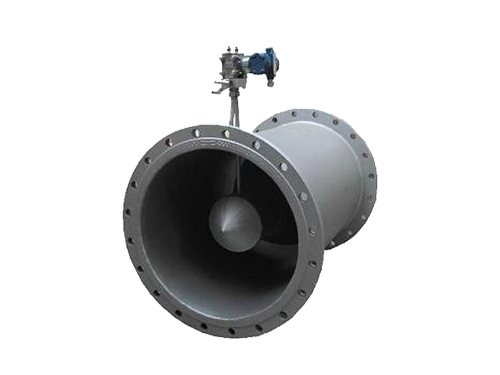
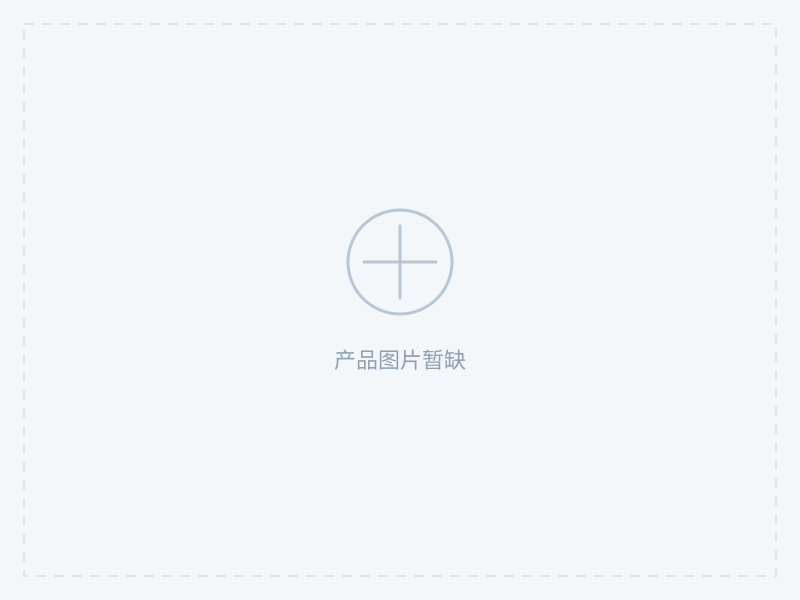
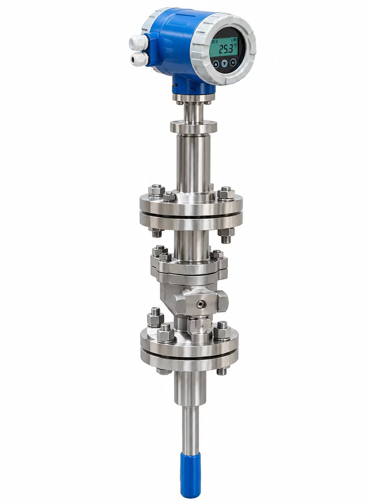
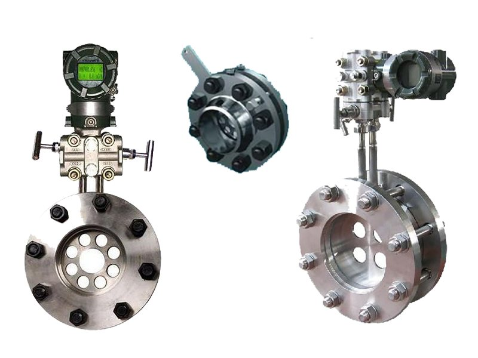

共 9 款在产仪表，按流量测量与节流装置分类，可直接进入技术详情页了解适用工况与选型要点。
大管径、低流速气体流量精确测量的经典节流装置。

V 型锥节流结构，长期精度高、脏污介质适应性强。

电磁感应测量导电液体流量，管路无压损，适用于污水、浆液与水工况。

探头插入管内测流，无需切断管路或加装法兰管段，适合既有管线改造。
差压发生装置，无可动部件，适合高温高压蒸汽流量计量。
环形通道结构，脏污介质可轻松通过，广泛用于各类流体。
巴类差压式流量计，安装简便、压损小、不受磨损影响。

多孔孔板结构，兼顾平衡整流与测量精度。
结构最简单、适应性最强的标准节流装置，含智能补偿型。
告诉我们工况参数，工程师会在 1 个工作日内给出选型建议。